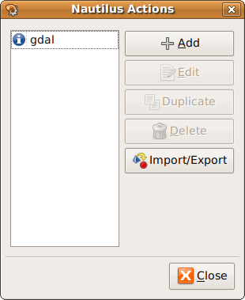
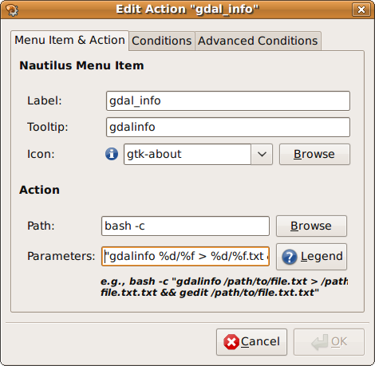
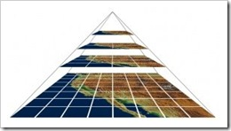
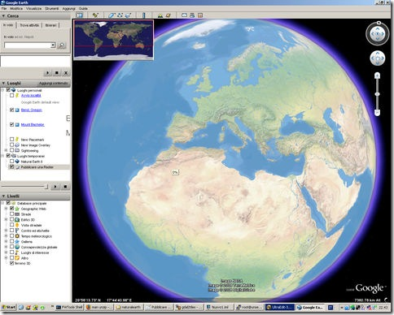
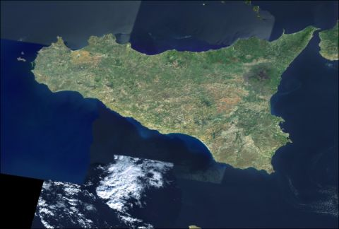

A Febbraio del 2006 – tantissimo tempo fa … – ho scritto un piccolo post sull’installazione di MapServer in ambiente Windows su un sistema in cui fosse già installato un webserver (Apache in particolare).
E’ stato un post che ha ricevuto molte letture, ma che ha anche subito qualche “legnata tecnologica”. Lo avevo scritto infatti non dentro il motore di questo blog (WordPress), ma dentro Writely.
Cosa è Writely? E’ nientepopodimeno che l’applicazione online su cui è basato l’editor di testo di Google Docs, comprata per l’appunto da Google proprio in quell’anno.
Ho scritto l’articolo, ho inserito anche delle immagini d’aiuto alla comprensione del testo, ed ho pubblicato tutto su questo blog con un click; il testo è stato contestualmente archiviato sui server di TANTO, mentre le immagini sono rimaste sui server di Writely. Questi non sono stati spenti subito e, per diverso tempo, questo vecchio glorioso articolo non ha subito alcuna conseguenza dal passaggio di Writely a Google. Spenti i server, sono sparite le immagini ed in qualche modo anche la leggibilità del post in oggetto. Ho provato a ripescarle dall’Internet Archive Wayback Machine, ma senza fortuna.
In ogni caso dovevo rimediare da tempo. Avevo rimosso dalla memoria il problema (sorry ), e un commento recente mi ha messo nuovamente davanti alla cruda realtà (grazie riccardo). L’articolo inoltre è datato anche nei contenuti, e valeva la pena dargli una rinfrescata.
Il lavoro di ogni giorno è spesso routinario; spesso anche per chi si occupa di sistemi informativi geografici. Non parlo dell’analisi spaziale, ma di quelle cose che facciamo quasi ogni giorno: leggere le metainfomazioni di un file (e scoprire che sono povere), convertire il formato di un file, estrarre una porzione di una raster, etc.
Si tratta di operazioni in genere molto semplici, che siamo in grado di portare a termine con molti strumenti. Questo blog parla de “le cose che ci piacciono TANTO”; una di queste sono quelle utility che alleggeriscono il lavoro di ogni giorno, con un click del mouse ed un menu contestuale.
Vi parlerò di due applicazioni di questo tipo, una per Windows ed una per Ubuntu (e per tutte le distribuzioni che sfruttano Gnome), che sono in grado di “trasferire” sul tasto destro del mouse alcune comuni operazioni utili ad un utente GIS.
Il prerequisito è che nel nostro sistema operativo siano installate le librerie GDAL, che sfrutteremo come motore delle operazioni “spaziali”. Per installarle su Windows basterà scaricare ed installare FWTools, mentre su Ubuntu basterà installare gdal-bin tramite synaptic o tramite riga di comando.
Alla fine del post saremo in grado di fare click con il destro su una TIFF del nostro hard-disk, ed eseguire queste due semplici (ma comodissime operazioni):
convertirla in un altro formato spaziale (in questo esempio eseguirò la conversione in formato JPG2000, un eccellente formato compresso che può avere attributi geografici)
leggerne le metainformazioni (anche quelle spaziali)
Se dovessi ottenere questi due risultati con le librerie GDAL, dovrei aprire il prompt dei comandi e scrivere rispettivamente:
> gdal_translate -of JP2ECW input.tif output.jp2
> gdalinfo input.tif
Vedremo come convertire questi comandi testuali, in operazioni da eseguire con il mouse.
Su Windows
Su Windows sfrutteremo Open++, un’utility di 200kb che consente di personalizzare l’elenco di comandi presenti nel menu contestuale, che si apre quando si clicca con il tasto destro del mouse su un file (o su una cartella).
Una volta che lo avrete scaricato ed installato, troverete una nuova voce nel menu che si aprirà al click con il destro su un file; è visibile nella figura sottostante (“Open++”).
L’utilizzo è immediato e quasi autoesplicativo, in quanto Open++ è già configurato per eseguire delle comode operazioni di base: ade esempio copiare il percorso assoluto di un file (Copy Path), o aprire il prompt dei comandi a partire dalla cartella selezionata (Command Prompt). Questi due stupidi comandi, sono già un ottimo esempio di alleggerimento del lavoro.
Il primo comando che voglio aggiungere, ci consentirà di convertire in formato JPG2000 un’immagine TIFF. Per inserire questo nuovo comando, tra quelli disponibili in Open++, dovrò cliccare sull’ultima opzione del suo menu a tendina: “Customize” (vedi figura poco sopra).
Mi si aprirà la finestra sottostante:
Questi i passi da eseguire:
cliccare in alto a destra sul tasto “Add”, e scegliere l’opzione “Command”
cliccare sulla cella “Title”, ed aggiungere un nome descrittivo al comando che si sta creando (ad esempio “Convert to JPG2000”)
inserire nella cella “Program” il programma che si vuole lanciare. Nel nostro caso vogliamo lanciare il prompt dei comandi e basterà scrivere “%ComSpec%”
scrivere nella cella “Arguments” gli argomenti che vogliamo passare al nostro comando. Nel nostro caso inseriremo la seguente stringa ‘/c “C:\Programmi\FWTools2.2.6\bin\gdal_translate -of JP2ECW” $(TargetName)$(TargetExt) $(TargetName).jp2′
il parametro “/c” fa sì che il prompt dei comandi venga chiuso al termine dell’operazione
“C:\Programmi\FWTools2.2.6\bin\gdal_translate” è il percorso assoluto (nel mio pc) dell’utility GDAL – gdal_translate – che gestisce le conversioni tra formati di file spaziali
“-of JP2ECW” è il parametro necessario per impostare JPG2000 come formato di output
$(TargetName)$(TargetExt) sono delle variabili che coincidono con il nome e con l’estensione del file su cui cliccheremo con il destro, e che verranno valorizzate dinamicamente al lancio del comando. Se ad esempio il file su cui farò click sarà “c:\dati\input.tif”, la variabile “$(TargetName)” verrà sostituito da “c:\dati\input” e “$(TargetExt)” da “.tif”.
lo stesso si dica per $(TargetName).jp2, che verrà sostituito da “c:\dati\input.jp2”
cliccare sulla cella “Associate with Files” e scrivere *.tif
in questo modo il comando di conversione formato sarà disponibile soltanto per i file con estensione .tif (è possibile aggiungere altre estensioni, separandole tramite “;”)
impostare gli altri parametri come nella figura soprastante e cliccare su “OK”
A questo punto aprite una cartella in cui avete un file TIFF, fateci click sopra con il destro del mouse, e selezionate Open++/Convert to JPG2000. Si aprirà il prompt dei comandi e verrà lanciato il comando gdal_translate; a comando eseguito il prompt dei comandi si chiuderà automaticamente e troverete il file JPG2000 (con estensione .jp2) nella stessa cartella in cui è presente il file TIFF.
Quello di sopra è soltanto un esempio; si può di più, meglio e diversamente. Consideratelo come un primo tutorial, dopo il quale iniziare a dare sfogo alla vostra fantasia ed alla vostra competenza.
Per ottenere le metainformazioni spaziali di un file TIFF, utilizzando soltanto il tasto destro del mouse, dovrete un creare un nuovo comando. La procedura è quasi identica alla precedente, salvo per la cella “Arguments”: dovrete inserire la stringa ‘/k “C:\Programmi\FWTools2.2.6\bin\gdalinfo $(TargetName)$(TargetExt)’.
La differenza più importante è il parametro “/k”, che farà in modo che il prompt dei comandi non venga chiuso al termine del comando gdalinfo. Nella finestra del prompt potrete quindi leggere le metainformazioni del file che avrete selezionato.
In questo filmato vedrete i due comandi in azione:
Su Linux
In questo caso sfrutteremo Nautilus-actions, un’utility analoga a Open++ in ambiente GNOME e quindi anche in Ubuntu. E’ installabile tramite synaptic o digitando nella shell:
>sudo apt-get install nautilus-action
Una volta installato lo troverete nel menu Sistema/Preferenze/Nautilus Actions Configuration.

Creiamo un’azione (action) che estragga le metainformazioni da un tif selezionata.
Questi i passi da seguire:
cliccare su Add
inserire nella cella “Label” un nome descrittivo del comando (ad esempio “gdal_info”)
scegliere – è opzionale – un tooltip per il comando (ad esempio “cliccare qui per avere le metainformazioni del file selezionato”)
scegliere – è opzionale – un’icona per il comando
definire il comando da lanciare, tramite la cella “Path”
inserire la stringa “bash -c”
impostarne la stringa “gdalinfo %d/%f > %d/%f.txt && gedit %d/%f.txt” nella cella “Parameters
“%d “e “%f ” sono delle variabili che verrano sostituite dinamicamente dal percorso (senza estensione) e dall’estensione del file selezionato
il carattere “>” farà sì che l’output del comando – le metainformazioni – possano essere scritte e memorizzare in un file di testo
“%d/%f.txt” faranno si che il file di testo venga salvato nella stessa cartella del file selezionato (%d), con lo stesso nome (%f) e con estensione .txt
“&&” fa si che venga esguito il comando successivo – gedit – ma soltanto dopo la fine del primo
“gedit %d/%f.txt” per aprire con l’editor di testo di Ubuntu il file di testo appena creato
cliccare sul Tab “Conditions” e scrivere nella cella “Filenames” la stringa “*.tif” (in questo modo il comando gdal_info sarà visibile soltanto per file con estensione .tif)
selezionare il radio botton “Only files”
e cliccare su OK

A questo punto non ci resta che fare click con il destro su un file .tif e provare il comando appena creato. Aggiungo però qualche spiegazione dovuta. Cosa è bash?
Si tratta di un interprete di comandi che permette all’utente di comunicare col sistema operativo attraverso una serie di funzioni predefinite, o di eseguire programmi.
Il parametro “-c” forza bash a leggere i comandi dalla stringa di testo che segue, che nel nostro caso è quella del punto 6 di sopra.
Nel filmato sottostante vedrete (male, è saltata una parte) il comando in azione:
Nautilus-actions è a mio avviso un gioiellino. Una caratteristica che lo fa brillare è la facilità di condividere i comandi creati. Lo si fa con il tasto “Import/Export” presente nella finestra principale. Qui ad esempio una serie di “azioni” già pronte. Il comando di conversione in JPG2000 è di facile implementazione e non lo svilupperò.
In chiusura
Prendete quanto scritto soltanto come spunto per “piegare” (ad esempio) le librerie GDAL/OGR al vostro tasto destro. Sono quasi un’analfabeta di istruzioni da riga di comando, e quelle che vi ho indicato possono sicuramente essere scritte meglio e più elegantemente. Mi piacerebbe molto che qualcuno condividesse qui la propria esperienza, con qualche comando “de paura”.
In un post recente, ho scritto di alcune delle modalità di pubblicazione online di cartografia digitale. Ne sono seguiti dei commenti interessanti, ed alcune email con richieste di consigli e di approfondimento. L’argomento mi è sembrato “caldo”, e credo valga la pena alimentarlo ulteriormente.
Su un blog che vi consiglio di leggere – thematicmapping blog – ho scoperto dell’esistenza di GDAL2Tiles, un software a riga di comando che consente di pubblicare -rapidamente e con efficacia – una carta raster nelle seguenti modalità: Google Maps, OpenLayers and Google Earth. E’ uno strumento incluso in GDAL/OGR 1.5.0, e quindi anche nell’ultimo FWTools.
 Il lavoro che fa GDAL2Tiles è quello di leggere un’immagine georeferenziata, e suddividerla in tasselli da 256 x 256 pixel, con una struttura a piramide (il nome del pacchetto è in qualche modo descrittivo della funzione che svolge). In altre parole a partire da una raster, ne vengono generate diverse a risoluzioni decrescenti, che vengono suddivise in sezioni da 256 pixel (vedi figura).
Il tassellamento e la piramidazione sono molto efficienti per distribuire raster sul web, in quanto l’immagine potrà essere visualizzata direttamente alla risoluzione adatta al livello di zoom attivo, e verranno scaricati soltanto i tasselli dell’area che stiamo osservando a video. E’ il meccanismo che sta dietro al motore di Google Maps e a quello dei maggiori provider di cartografia online.
Andiamo alla parte pratica e proviamo a mettere online una delle fantastiche immagini presenti su Natural Earth II. Si tratta di file (qui sotto un esempio) che rappresentano la terra, così come sarebbe senza l’influenza dell’uomo (immaginate Parigi coperta da una foresta temperata …); una rappresentazione del pianeta, precedente all’era moderna.
La prima cosa che ho fatto è stata georeferenziarla. Conosco le coordinate dei 4 vertici della tavola, ho FWTools installato, e dalla shell FWTools lancio il seguente comando:
gdal_translate è una delle utility presenti in FWTools; questo il significato dei parametri usati:
-a_srs per assegnare il corretto sistema di coordinate (EPSG:4326) -gcp per assegnare i vari punti di controllo (prima le coordinate in pixel, e poi quelle del sistema di coordinate scelto)
A partire dalla jpeg scaricata, ho creato un tif georeferenziata, assegnando come punti di controllo i 4 vertici della carta.
-t_srs è il parametro per assegnare il sistema di coordinate.
La mia immagine di partenza è di 16200 x 8100 pixel; GDAL2Tiles la tassellerà e la piramiderà. Ogni tassello che andrò a generare sarà di 256 x 256 pixel. I livelli di piramidazione, corrispondenti ai livelli di zoom possibili, rispecchieranno lo schema della tabella sottostante.
Livello di Zoom
Dimensione immagine
Tasselli
Numero totale di tasselli
1
512 x 256
2 x 1
2
2
1024 x 512
4 x 2
8
3
2048 x 1024
8 x 4
32
4
4096 x 2048
16 x 8
128
5
8192 x 4096
32 x 16
512
6
16384 x 8192
64 x 32
2048
7
32768 x 16384
128 x 64
8192
Per il mio esempio mi “accontenterò” di un livello di zoom massimo pari a 5 e, prima di dare in pasto il mio file a GDAL2Tiles, ne ridurrò le dimensioni di conseguenza:
-title per dare un titolo al progetto -publishurl per definire l’url delle mappe che pubblicheremo -v per avere un output “verboso” del comando, e leggere a video il dettaglio di tutte le operazioni eseguite da GDAL2Tiles
L’output del processo sarà una cartella con il seguente contenuto:
una sottocartella per ognuno dei livelli di piramidazione (in ognuna di queste diverse altre sottocartelle con i vari tasselli da 256 x 256 pixel)
un file denominato “openlayers.html”, ovvero un’interfaccia web basata su OpenLayers
un file denominato “googlemaps.html”, ovvero un’interfaccia web basata su Google Maps
un file denominato “tilemapresource.xml”, ovvero lo schema della struttura dei tasselli di mappa
un file denominato “cartella_di_output.kml”, che ci consentirà di visualizzare in Google Earth l’immagine processata (vedi figura sotto)
Bisognerà fare l’upload di tutti i file creati da GDAL2Tiles, all’interno della cartella specificata sopra con il parametro -publishurl, e testarne infine il risultato.
Qui potete testare la visualizzazione della mappa in OpenLayers, qui in Google Maps e qui in Google Earth.

Il file con l’interfaccia basata su OpenLayers ha bisogno di una patch. Qui il file con la patch applicata.
Un bravo webmaster è in grado di portare a termine questa procedura, senza sapere nulla di cartografia digitale? Probabilmente si, ma magari soltanto in modo meccanico e pertanto non saprà applicarla ad esempi differenti da quelli descritti (immaginate di partire da un 25000 IGM).
Non ci si improvvisa cartografi online, e bisogna sempre documentarsi. Strumenti come questo fanno venire la voglia di farlo e consentono una più rapida valorizzazione e diffusione di queste tematiche. E’ per questo che mi piace GDAL2Tiles.
In questo Blog ho parlato già molte volte di FWTools e delle utilities in esso contenute. Oggi lo farò ancora una volta, fortemente ispirato da un piacevolissimo post di Tom Kralidis.
Tom parla di una catena di coffee shop canadese, Tim Hortons, e ci racconta di quanto sia importante (per un canadese) sapere dove possa essere il punto vendita più vicino della catena. Tanto importante che un forum di appassionati di GPS ha creato delle tabelle con le coppie di coordinate di tutti i punti vendita nel paese. Sia in formato .xls, che .csv. Tom nel post mostra come sfruttare ogr2ogr, una utility contenuta in FWTools, per convertire queste tabelle in formato .gpx (un formato di scambio dati per GPS) e in formato .kml (Google Earth).
Il passi sono i seguenti:
apro il file excel che contiene i POI dei punti vendita
salvo il file in formato .csv (lo chiamo ad esempio th.csv)
sfrutto la capacità di OGR di leggere informazioni spaziali anche da una semplice tabella, sfruttando il supporto della Virtual Datasource. Per sfruttare questo tipo di connessione creerò un file .ovf così fatto:
Il pametro “-dsco” mi consente di estendere il formato .gpx con campi non supportati nello schema GPX standard (ad esempio la Città ed il Telefono del punto vendità).
Questi sono soltanto due dei formati di output possibili, ma le possibilità sono veramente molte.
OpenAerialMap è un bel progetto con un obiettivo interessante: raccogliere foto aeree di dominio pubblico fatte in tutto il mondo, e renderle consultabili tramite un’unica interfaccia coerente. Chiunque abbia a disposizione dati di questo tipo, li potrà caricare sul sito e rendere disponibili al mondo.
Il catalogo è ancora limitato, ma negli stati uniti la copertura è buona anche ad una certa risoluzione. Per l’Italia ancora nulla ad alta risoluzione, ma c’è del materiale utile per carte regionali. Si tratta di immagini i-Cubed Landsat, sulle quali purtroppo cade (al momento) quanto detto in premessa, in quanto non è chiaro con che tipo di licenza vengano rilasciate. Si legge infatti:
[...]
it is best to assume that this imagery can not be used outside of OpenAerialMap
[...]
Tutto il catalogo è accessibile tramite WMS, e quindi potrete anche scaricare le immagini sul vostro PC e farne l’uso che la licenza vi consente. Per fare il download dell’immagini potrete ancora una volta usare FWTools:
scaricate il file xml che descrive il servizio WMS di OpenAerialMap (http://openaerialmap.org/static/gdal_wms.xml) e salvatelo nella cartella in cui avete installato FWTools
aprite la shell di FWTools
scrivete un comando con questa sintassi: gdal_translate -projwin 12.06979 38.59784 15.86623 36.0124 -outsize 5000 5000 -of JP2KAK gdal_wms.xml palermo.jp2
FWTools è onnivoro in questo contesto e può quindi gestire come source fonti WMS. Con questa sintassi scaricherò una foto che copre la Sicilia in formato JPEG2000, che potrei usare per una carta al 250.000 (qui sotto uno screenshot dell’area). Le coordinate che leggete nel comando sono quelle del vertice in alto a sinistra e di quello in basso a destra.

Il post è (quasi) una traduzione molto veloce di un post del bravissimo Christopher Schmidt.
Lezioni online per spiegare scienza e tecnologia Oilproject organizza con l’Istituto Italiano di Tecnologia una serie di lezioni divulgative su neuroscienze, nanotecnologie, farmacologia e macchine intelligenti, per raccontare al grande pubblico lo stato dell’arte della ricerca di base e applicata. Qui tutti i dettagli. Leggi tutto... (0)
Il GFOSS Day 2011 è a Foggia I prossimi 24 e 25 novembre l’Università degli Studi di Foggia ospiterà il GFOSS DAY 2011, organizzato come di consueto dall’Associazione Italiana per l’Informazione Geografica Libera GFOSS.it Leggi tutto... (1)
Mappali, denunciali e... tassa.li Tassa.li è una interessante startup realizzata da un gruppo di giovani tecnologi, con l’intento di rendere facile la denuncia di esercizi commerciali che non rilasciano il regolare scontrino fiscale. E in un periodo nero come questo, molta gente avrà una gran voglia di partecipare. Grazie a una applicazione disponibile sia per iOS che Android, è infatti possibile in pochi clic geotaggare l’esercizio e riportare la somma dello scontrino non emesso. Il tutto in maniera assolutamente anonima. E questi ragazzi dimostrano di vedere molto lontano, perché presto rilasceranno i dati raccolti in forma totalmente aperta e libera. (7)
TANTO non rappresenta una testata giornalistica ai sensi della legge n. 62 del 7.03.2001, in quanto non viene aggiornato con una precisa e determinata periodicita'. Pertanto, in alcun modo puo' considerarsi un prodotto editoriale.